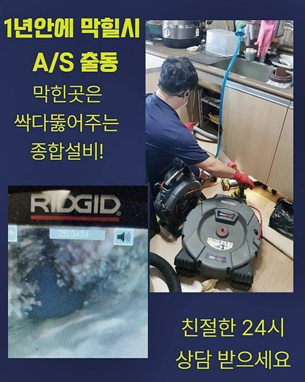
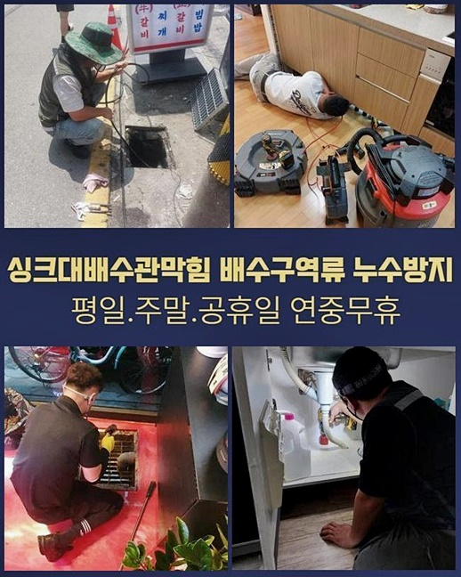
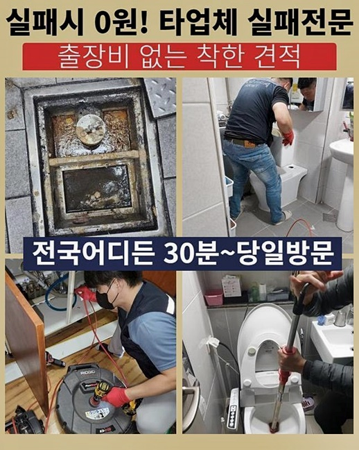
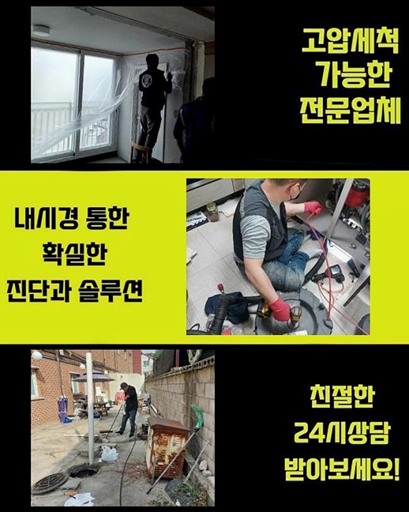
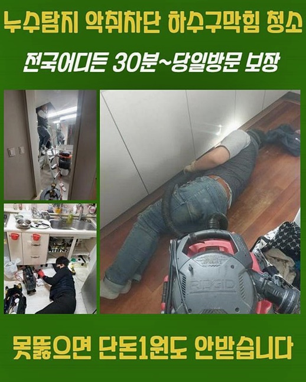
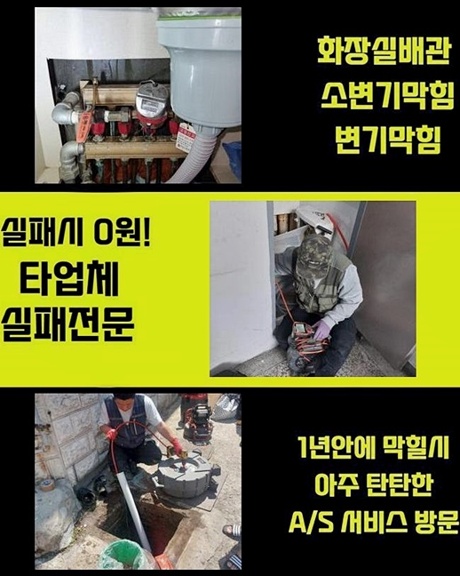

🏠 서탄면대변기막힘 지산동 배관뚫기 누수
용인시 처인구 배관막힘 전문 시공 후기

📋 작업 개요
- 위치: 용인시 처인구, 수원시 영통구, 화성시 동탄
- 서비스 유형: 배관막힘, 누수수리, 고압세척
- 작업 일시:
- 업체명: 하수구수사대 (010-5615-2118)
🔍 문제 상황
서탄면대변기막힘 지산동 배관뚫기 누수
안녕하십니까 배관업무는 간단히 약품을 넣는다고 소멸이 되기 어렵습니다
생각과 상이하게 혼잡하고 불쾌한 광경이 자주 목격되기에 어떤 사유로 막힘이 일어난건지 이유를 명확히 검진하고 그에 적합한 계획을 세워서 공사하는 게 선결적 업무랍니다
일부분의 청소를 시행했다 하여도 딴 세대에서 탈이 나 근시일내에 업자를 수소문해야 하기도 하죠
그래서 현 장애만 처치하는 선에서 마감짓지 말고 모든 처소를 온전하게 관측하여서 안쪽에 거류하는 잔재들을 청소하여야 장애가 발현되지 않게 되죠
마땅히 거주자분들도 유지보수에 신경써야 합니다
금번 방문한 가옥은 저희팀의 후기글을 읽어 보시고 누수 증세를 처치하고자 전화하셔서 내방하였답니다
막힘과 누수가 무슨 인과관계가 있느냐 궁금할 수 있겠으나 이번 글을 보면 충분히 그럴만 하다는 걸 인지하실 수 있을 것입니다
2층 이상은 평범한 주택이고 1층에는 가게가 들어가 있는 최근에 많이 보이는 건물이었죠
특정한 위치에 오수 및 배수 파이프가 위치해 있는데 중심 하수관이 물막힘이 생겨나 넘치게 되었으며 최종적으로 옆라인의 주택으로 전이되어서 매우 비경했어요
최근에 자주 보이는 스타일이 1층 자리에는 가게가 있고 2층 이상부턴 주거 형태로 되어 있는 경우가 많은데 보는 것과 같이 관리미비로 인하여 말썽거리가 출몰하는 형국이 꽤 많답니다

🔎 원인 분석
💡 전문가 진단: 정밀 진단 장비를 사용하여 슬러지의 고착 여부를 판명하고 타격/세척 작업을 실시했습니다.
물이 넘쳐버리는 바람에 주위가 엉망이었으며 수습하기 위한 목적으로 빨리 수리에 들어갔답니다
먼저적으로 물막힘 처리때문에 맨홀 내부의 시설물을 전반적으로 조사하고 건물 내부에서 활동하시는 세대원들께 허락을 받고 배수관 이상여부를 전체적으로 관찰하였더니 특이점은 발견하지 못했어요
그러나 거주중이신 분들이나 매장 주인분에게 결점이 없다라 확언드릴 순 없죠
평상시에 무책임하게 이물들을 내다버린 게 안이 아니라 다른 부분에서 역류증세가 나타난 거에요
그럼 누수증세가 발발하는 원인은 어느쪽에서 발견할 수 있을까요 정답은 이물인데요
하수관이 노화되며 찢어져버리는 상황도 다수이나 이와 같이 고형물들이 쌓이면서 하수관이 부풀기도 하고 줄어들기도 하면서 관의 강도가 떨어지고 그런 다음엔 틈이 발생하기도 해요
근래에는 혼자서 거주하시는 분들이 많아 오피스텔 등에 거주하는 개인들이 많죠
그런 다음엔 이와 같은 일로 고초를 겪는 건물주케이스가 무수한데요
그게 왜 같이 일어나느냐 의문이 드실 수 있겠습니다만 1인 가구의 특성상 꼼꼼하게 관리하는 개인들이 있는 반면 책임감없이 생활하시는 사람도 상당합니다
물에 녹지 않는 여러가지 물건들을 배수 파이프로 버리거나 변기통 안으로 내려내려넣어버리는 사태가 많이 목격됩니다
그래서 해당 문제점이 점진적으로 많아지는 상황이죠
일반적인 공용주택도 이런 일이 발생하기는 하나 구성원들이 많으며 관리시스템이 있기에 이런 처소들과 같이 빈번하게 발발하지는 않아요

🔧 작업 과정
일단 맨홀을 열어서 안의 이물질들을 없앴어요
물세척을 하기 위해 작업 차량을 지점 근방으로 접근시켜서 물청소줄을 안쪽으로 집어넣어 찌꺼기를 소탕하였죠
해당 업무는 끓는 수준의 액상 성분을 활용하고 고압으로 조정한 뒤에 강력한 동력을 기반으로 내측의 노폐물들을 소멸시키는 거죠
이번 배관 트러블이 일어난 처소와 같이 밖에서 막힘이나 누수증세가 발현되는 때 활용하는 방식입니다
세척에 필요한 수도는 저희 작업차량 안에서 준비되는 것을 사용하므로 별도 준비에 대한 신경은 안쓰셔도 돼요
반복적으로 세정하며 최종적으로 막힌 기름기와 차단을 발생시킨 메인 이슈였던 휴지조각들을 전부다 없애버렸어요
습윤티슈 같은 경우엔 종이처럼 수용성이 아니고 다양한 화학 성분들을 기반으로 제조된 것이므로 양변기 안에 투입하면 차질을 빚게 되므로 필히 쓰레기통에 분리하여 정리해야 탈이 안생겨요
그렇게 안 하신다면 차후 트러블이 증대되고 막힘으로 기어이 파이프 손상이 발발하고 인접 주민들에게도 타격을 주게 되는 거죠
이같은 사고들 때문에 정부에선 매해 세정 계획을 세워 배관업체를 모집해 노후화된 배수관 내측에 거류하는 슬러지를 소거하는 일을 이행하고 있답니다
이처럼 설비 훼손의 주요 문제로 대두되고 있다는 점을 근거로 필히 신경써서 처치하실 것을 부탁드리며 아무생각 없이 처분하는 일이 지속된다면 간단하게 막힘으로 종료되지 않고 세대 내의 파이프가 고장나면서 수습이 어려워 질 수 있어요
촬영 기기를 넣어 면밀하게 조사하면서 남겨진 이물들이 상존하는지 지켜보았어요
다행스럽게도 깔끔하게 처리되었답니다 의뢰인께도 정확하게 설명해 드렸고 추후 사용을 적절하게 해야 한다는 점을 설명드렸어요
가끔 고장난 부분이 또 말썽이라 토로하시는 분들도 많은데 그것은 전체적인 하수관을 세정 안했기 때문이라 볼 수 있어요
이 현장과 같이 막힘이나 역류가 생겼을 때에 그 부분의 상태의 종료에만 힘쓸게 아닌 전체적인 청소를 이행하면 트러블이 일어나지 않는 거죠
마땅히 거주하시는 개인들도 올바르게 사용하여야 합니다
보편적으로 이행 가능한 간소한 방안으론 크기가 커다란 음식재료가 파이프로 투입되지 않도록 거름망을 설비할 수가 있습니다
일반적인 내용이긴 하나 최근에 출장갔던 처소에서는 이것조차도 방관하는 의뢰인도 있으셨답니다
하부로 구멍이 나 있다고 해서 막 버리게 되면 얼마 못가 추가 문제가 생겨날 가능성이 있어요
다른 곳에도 손실을 주었으니 깔끔하게 물청소로 정리했답니다


✅ 작업 완료
본 시공이 중요한 것은 당연하지만 차후 정리도 중요시하여야 한다는 점이 저희의 기본 방침입니다
단순하게 막힘만 소멸시키는 것에서 끝나지 않으며 주위 정돈도 이행하고 있기에 의뢰하신다면 민첩하게 고장 이전의 상태로 만들도록 노력하겠습니다
저희들은 침전물의 유형이나 다른 고장 등에 얽매이지 않고 뚫음이 필요할 때 즉각 방문드리고 있답니다
그렇기에 아무때나 저희를 통하여 수선을 요하신다면 전화만 주시면 돼요
배관 속 침전물은 단순히 누증되지 않고 고약한 냄새를 풍기고 배관 자체를 망가뜨리기에 정기적 검진을 하는 것이 좋고 그것이 힘겹다면 일상 중에 막힘이 일어나지 않게끔 사용하실 것을 권장합니다



⚠️ 하수구 배관 막힘 예방 및 관리 가이드
- ✅ 머리카락, 비닐, 물티슈 등 물에 분해되지 않는 이물질은 절대 흘려보내지 마세요.
- ✅ 기름기 많은 식기는 설거지 전 키친타올로 먼저 기름때를 닦아내세요.
- ✅ 주기적으로 배수구에 뜨거운 물을 가득 부어주어 유지방 고착을 방지하세요.
- ✅ 작업 후 1년 이내 재발 시 무상 A/S 보증 서비스를 제공합니다.
💡 핵심 정리
- 확실한 장비 작업(내시경 점검 및 샤프트 스케일링)으로 원인을 뿌리 뽑습니다.
- 작업 후 1년 이내에 동일한 부위 재발 시 100% 무상 A/S 서비스를 보장합니다.
- 서울 · 경기 · 인천 전 지역에 24시간 언제든 긴급 출동할 수 있도록 항시 대기 중입니다.
❓ 자주 묻는 질문 (FAQ)
🚨 용인시 처인구 배관막힘 문제로 고민이신가요?
정확한 원인 진단과 확실한 시공으로 재발 없는 해결을 약속드립니다.
24시간 긴급 출동 | 서울 · 경기 · 인천 전지역 | 1년 내 재발 시 무상 A/S